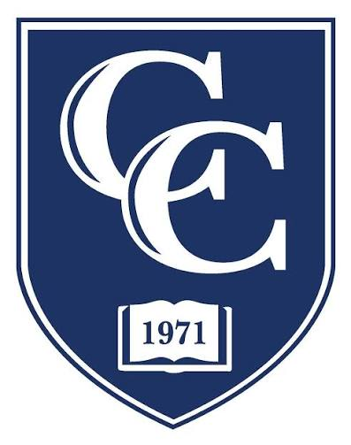
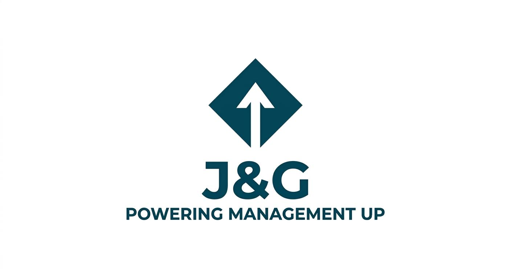

Las corporaciones que ejecutan macroproyectos en los sectores de infraestructura, energía y manufactura avanzada en el corredor industrial de Texas sufren desvíos críticos latentes. En promedio, las organizaciones destruyen el 37% del valor de sus planes de negocio debido a fallas invisibles de ejecución operativa (Mankins & Steele, 2005). Las oficinas de proyectos (PMOs) tradicionales operan de forma burocrática y aislada de las finanzas y de la alta dirección. J&G irrumpe en el mercado como una firma consultora premium que fusiona la ingeniería de procesos, la gobernanza predictiva PMP y el modelado analítico de nivel MBA para intervenir y salvar líneas base multimillonarias en tiempo real.
Misión: Potenciar el rendimiento y blindar el valor de las organizaciones mediante la estandarización metodológica, la analítica predictiva y el rescate técnico de proyectos complejos, transformando la incertidumbre operativa en retornos financieros predecibles y de alto impacto.
Visión: Ser reconocidos para el año 2029 como la firma consultora premium líder en el estado de Texas para el rescate y gobernanza integral de proyectos de energía e infraestructura industrial, distinguidos por un modelo de negocio repetible y enfocado en la excelencia de la alta dirección.
La firma adopta un sistema de rotación anual en la presidencia ejecutiva para garantizar la simetría decisional y mitigar riesgos de fatiga ejecutiva, delegando las funciones de soporte (legal, fiscal y marketing digital) en especialistas externos contratados.
El mercado de servicios profesionales en Texas demanda intervenciones ágiles. Los clientes corporativos del sector industrial se enfrentan a un entorno de alta volatilidad donde la falta de entrenamiento en metodologías predictivas provoca el descarrilamiento ejecutivo de mandos técnicos avanzados.
Evaluación exprés del nivel de madurez bajo estándares CMMI.
Programas de inmersión y transferencia de destrezas directivas uno a uno.
Estabilización técnica de índices críticos en costos y cronogramas (SPI/CPI).
Dirección integral externa y llave en mano mediante PMO-as-a-Service.
Apalancados en un modelo de monetización premium y bajo una tasa de descuento (WACC) del 12%, las métricas cuantitativas confirman la solidez del negocio ante escenarios macroeconómicos adversos:
| Métrica Financiera | Valor Proyectado (36 meses) |
|---|---|
| Valor Actual Neto (VAN) | $1,420,500 USD |
| Tasa Interna de Retorno (TIR) | 54% |
| Período de Recuperación (Payback) | 14 meses (Punto de equilibrio operativo en Mes 5) |
| Seguro de Responsabilidad Profesional (E&O) | $2.0 Millones de USD de cobertura patrimonial |
Eficiencia Fiscal en Texas: Estructura de LLC bajo régimen de transparencia del IRS (Formulario 1065). Impuesto debido de $0.00 USD en los Años 1 y 2 al facturar por debajo del umbral de exención de $2.47 millones de dólares fijado por la Contraloría (Texas Comptroller, 2026).
Buscamos un capital semilla de $350,000 USD a cambio de una participación minoritaria preferente en la LLC. Los fondos financiarán la aceleración del embudo de marketing digital automatizado y el soporte de fondo analítico basado en Inteligencia Artificial. Esta decisión estratégica mitiga directamente el riesgo de inacción empresarial en el mercado.
En cumplimiento de las directrices académicas, se declara que se utilizaron herramientas de Inteligencia Artificial exclusivamente para: el diseño lógico y la codificación limpia de la presente interfaz web.